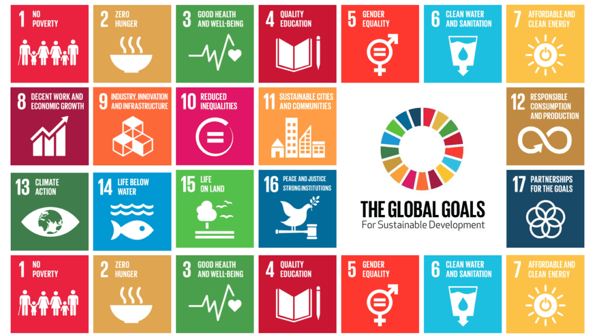
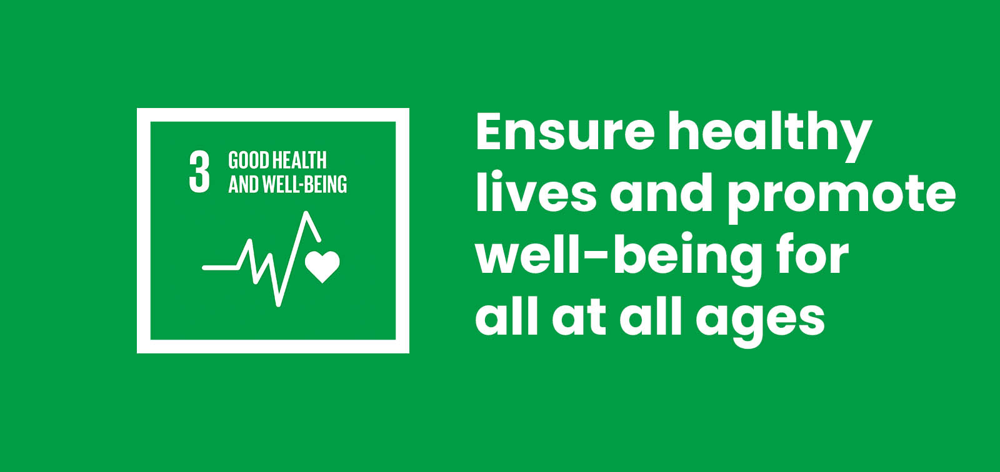
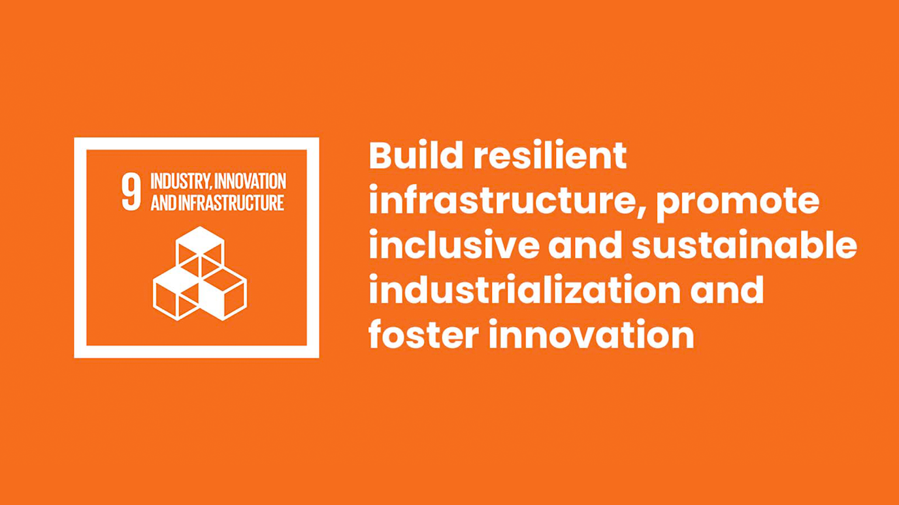
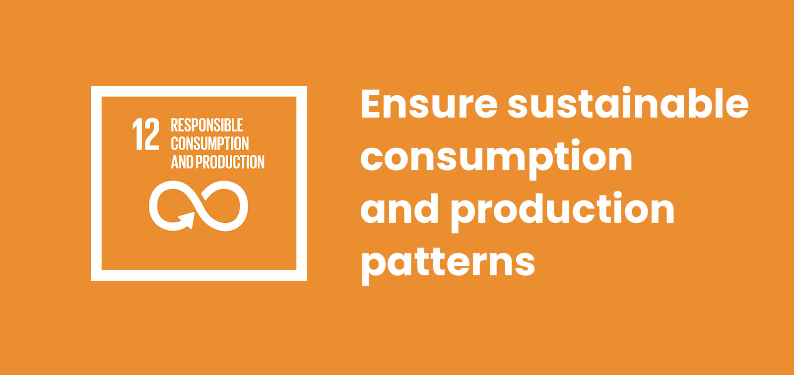
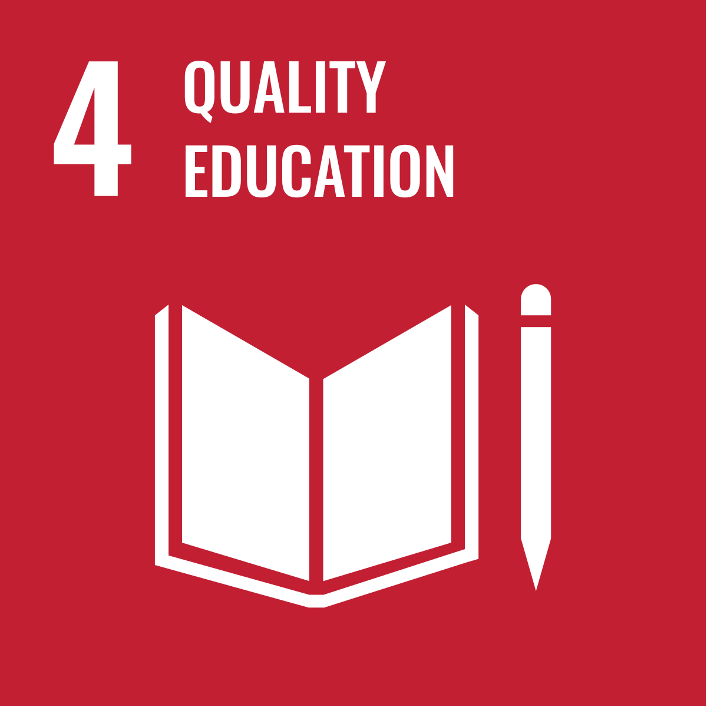
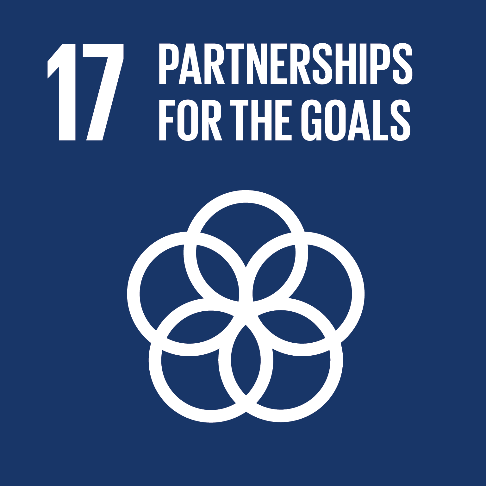
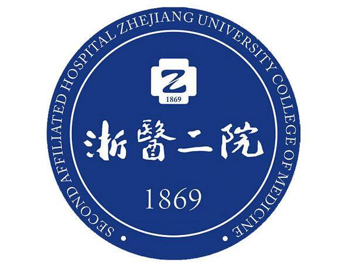
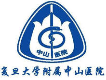

Loading...

Nurturing Hair and Planet Alike
To be or not to be; that is a question.
In this pursuit of luscious locks, we must not forget the world that cradles us. Our battle against hair loss should not be waged at the cost of our precious Earth. Just as my serpents are a part of me, so too is our planet an integral part of our quest. We shall forge a path of sustainable development, where every step taken to restore hair health also nurtures the environment. Let us embrace this harmonious journey, for the well - being of our tresses and the world around us.

Overview

The UN's 17 Sustainable Development Goals (SDGs) call for global action to eliminate poverty, protect the planet, and improve the lives and futures of all people. At present, progress is being made in many places, but overall, the pace and scale of progress have not yet reached the level needed to achieve the Sustainable Development Goals. Within the decade starting from 2020, we must take strong actions to achieve the SDGs by 2030.
Main Goals
SDG 3: Good Health and Well-being

Relation
Good health and well-being will remain one of the crucial goals of sustainable development, and our anti-hair loss project is poised to make a substantial positive contribution in this domain. In the future, hair loss problems, especially seborrheic alopecia, are likely to continue affecting not only an individual's appearance but also having a significant negative impact on the mental health of patients, potentially leading to more prevalent emotional issues such as anxiety and low self-esteem.
Plan
Our project will adopt the innovative technology of using soluble microneedles to deliver drugs, and we will be wholeheartedly committed to providing highly effective treatment solutions for patients. In the upcoming research and development phases, through meticulously designing even more advanced microneedles and optimizing the precise drug delivery system, we will ensure that the therapeutic drugs can be delivered even more directly and efficiently to the hair loss area, thereby greatly enhancing the efficacy of the drugs. For instance, we will conduct further in-depth studies on drug components like AbTAC and KGF. After undergoing even more rigorous safety and efficacy tests in the future, these components are expected to play an even more prominent positive role in promoting hair growth and regulating scalp oil secretion, thus remarkably improving the patient's hair loss condition. This will not only significantly enhance the patient's physical health but also, to a much greater extent, relieve the psychological pressure caused by hair loss, boost self-confidence, and effectively promote mental health, truly offering robust support for the patient's good health and well-being.
Potential Stakeholders
| Potential Stakeholders | Related Field | Role and Relevance |
|---|---|---|
| People with Hair Loss | Healthcare and Personal Well-being | Direct beneficiaries of the anti-hair loss project. Their experiences, needs, and feedback on existing treatments will be crucial for the development and improvement of our project. |
| Dermatologists and Trichologists | Medical and Healthcare Professionals | Specialists in skin and hair health, they have in-depth knowledge of hair loss causes and treatments. |
| Pharmaceutical Companies | Pharmaceutical Industry | They may be involved in the development, production, and supply of the drugs used in the soluble microneedle delivery system. |
| Medical Device Manufacturers | Medical Device Industry | Responsible for manufacturing the soluble microneedles and related equipment. |
| Research Institutions and Universities | Academic and Research Sector | Provide scientific research support, including fundamental research on hair loss mechanisms, development of new technologies, and clinical trials. |
SDG9: Industry, Innovation and Infrastructure

Relation
Industry, innovation, and infrastructure will continue to be of utmost importance for promoting the sustainable development of society, and our anti-hair loss project is set to play an even more significant role in these aspects in the future.
Plan
In terms of innovation, we will further apply and advance cutting-edge synthetic biology and biomedical engineering technologies. We will develop even more sophisticated versions of the innovative treatment method using soluble microneedles to deliver drugs. This future technology will not only break through the existing limitations but also precisely target the hair loss areas with enhanced accuracy, greatly improving the treatment effect. We will continuously explore and optimize new microneedle materials and refine the drug formulation, aiming to achieve even more groundbreaking technological innovations in the hair loss treatment field.
Regarding industrial development, our project will drive the coordinated development of related industries more vigorously. In the future, from the research and development to the large-scale production of microneedles and drugs, and then to broader clinical applications and extensive market promotion, we will cover multiple links and expand into more fields. This will strongly promote the deeper integration and development of industries like biotechnology, medical devices, and pharmaceuticals, creating a large number of new high-quality job opportunities and significant economic growth points. We will also strengthen our cooperation with upstream and downstream enterprises, integrating industrial chain resources more effectively to accelerate the upgrading and optimization of the entire industry.
In terms of infrastructure construction, we will upgrade and expand our existing advanced laboratories and research and development platforms. We will equip them with more state-of-the-art professional equipment and recruit more outstanding technical personnel. These enhanced infrastructures will provide even stronger support for the project's research and innovation and create an even better environment for cultivating top-notch professional talents in related fields. Additionally, we will take a more active part in formulating and perfecting industry standards, promoting the standardization and regularization of the hair loss treatment field to a higher level, and further strengthening and improving the industrial infrastructure.
Potential Stakeholders
| Potential Stakeholders | Related Field | Role and Relevance to SDG 9 (Industry, Innovation and Infrastructure) for the Anti-Hair Loss Project |
|---|---|---|
| Material Suppliers for Microneedles | Chemical and Material Science Industry | Supply specialized materials for the production of soluble microneedles, such as biocompatible polymers. |
| Equipment Manufacturers for Microneedle Production | Manufacturing Industry | Design and produce machinery and equipment required for the precise manufacturing of soluble microneedles. |
| Software Development Firms for Production Management | Information Technology Industry | Develop software solutions for production management, such as inventory control systems, quality management software, and process automation software. |
| Logistics and Supply Chain Companies | Logistics and Supply Chain Management | Manage the transportation, storage, and distribution of raw materials, finished products (microneedles and drugs), and related supplies. They ensure the timely and efficient movement of goods throughout the supply chain, which is crucial for the smooth operation of the industry. |
| Standards and Certification Bodies | Quality Assurance and Regulatory Support | Develop and enforce industry standards for the production and performance of soluble microneedles and related products. |
SDG12: Responsible Consumption and Production

Relation
Responsible consumption and production are key links in achieving sustainable development. Our anti-hair loss project has also taken a series of positive measures in this regard. In the production process, we attach great importance to the safety and sustainability of the products. For the materials of soluble microneedles, we select materials with good biocompatibility and degradability to avoid environmental pollution. In the process of drug research and development, we try to reduce the use of rare resources and harmful chemicals, adopt green synthesis methods and sustainable production processes, and reduce energy consumption and environmental pollution during production.
Plan
In terms of consumption, we are committed to providing consumers with high-quality, safe, and reliable hair loss treatment products. Through scientific publicity and education, we guide consumers to establish correct consumption concepts, rationally deal with hair loss problems, and avoid blindly following the trend to buy ineffective or unsafe products. At the same time, we pay attention to the recyclability and reusability of products to reduce the impact of product waste on the environment.
In addition, we will actively cooperate with suppliers and partners to promote the sustainable development of the entire supply chain. We will require suppliers to provide raw materials and components that meet environmental protection standards and work together to achieve the greening and sustainability of the supply chain. Through these measures, we have earnestly practiced the concept of responsible consumption and production in our anti-hair loss project and made contributions to achieving the sustainable development goals. We will also conduct comprehensive LCA analysis and NGO assessment afterwards, which are closely connected with entrepreneurship.
For more information about LCA & NGO, click here to find out our Business Plan.
Potential Stakeholders
| Potential Stakeholders | Related Field | Role and Relevance to SDG 12 (Responsible Consumption and Production) for the Anti-Hair Loss Project |
|---|---|---|
| Sustainable Raw Material Sourcing Companies | Supply Chain and Resource Management | Source and provide sustainable raw materials for the production of soluble microneedles and the drugs used in the anti-hair loss treatment. |
| Life Cycle Assessment (LCA) Consultants | Environmental Consulting | Conduct life cycle assessments of the anti-hair loss products, from raw material extraction to product disposal. |
| Ethical Certification Organizations | Ethical and Sustainable Certification | Develop and administer ethical and sustainable certification programs for the anti-hair loss industry. These certifications can cover aspects such as environmental sustainability, social responsibility, and product safety. |
| Recycling Facilities | Recycling Industry | Process and recycle the materials used in the anti-hair loss products, such as the packaging materials and potentially some components of the microneedles or drug delivery systems. |
| NGOs Promoting Circular Economy | Non-Governmental Organizations | Advocate for the adoption of circular economy principles in the anti-hair loss industry. |
| Sustainable Energy Providers | Energy Sector | Supply renewable energy sources, such as solar, wind, or hydro power, to the production facilities involved in the anti-hair loss project. |
| Industry Alliances for Sustainable Development | Industry Collaboration and Advocacy | Facilitate collaboration among companies in the anti-hair loss industry to develop and implement sustainable development initiatives. |
Stakeholders’s List（Draft）
Relevant Goals
SDG4: Quality Education

We recognize that synthetic biology plays a pivotal role in developing our innovative treatment method. To enhance public understanding of this field, we have initiated educational programs tailored to different populations and age groups. For students at the primary and secondary school levels, we have designed engaging science outreach activities, such as interactive workshops and science fairs. These activities aim to introduce the basic concepts of synthetic biology in an accessible and interesting way, sparking their curiosity about scientific research and potentially inspiring future scientists.
For university students and young researchers, we offer more in-depth training sessions and seminars. These events cover the latest advancements in synthetic biology relevant to our anti-hair loss treatment, including the design and optimization of the soluble microneedle drug delivery system. By providing such educational opportunities, we not only help them acquire valuable knowledge and skills but also contribute to building a pipeline of talent for the field.
SDG17: Partnerships for the Goals

We understand that collaboration is essential for driving innovation and achieving sustainable development in the field of synthetic biology and medical treatments. By working closely with other iGEM teams, we can pool our resources, expertise, and ideas. For instance, we have engaged in joint research projects where we share our findings on the use of soluble microneedles for drug delivery and learn from their experiences in related areas such as genetic engineering and bioprocessing.
These partnerships also extend to the development of experimental protocols and the sharing of laboratory techniques. We collaborate on optimizing the production process of soluble microneedles, exchanging insights on material selection, manufacturing methods, and quality control. This collaborative approach not only accelerates the progress of our project but also contributes to the overall advancement of the iGEM community.
Long Term Impact
Collaboration


We have the potential to establish close collaborations with various entities in the Hangzhou and Shanghai regions. These collaborations will play a crucial role in driving the project's long-term success and broader impact.
In the medical industry, partnerships with leading hospitals like the Second Affiliated Hospital of Zhejiang University School of Medicine in Hangzhou and Zhongshan Hospital affiliated to Fudan University in Shanghai will be invaluable. These hospitals can provide clinical resources for our research, including patient recruitment for clinical trials, access to medical data, and feedback from medical professionals.
Moreover, we aim to collaborate with research institutions such as the Shanghai Institute of Materia Medica and the Zhejiang Academy of Medical Sciences. These institutions have rich experience in drug research and development, and their participation can accelerate the process of turning our research findings into practical products.
SDGs
Economic Perspective
In the long run, our anti-hair loss project will have a positive economic impact. The development and commercialization of our innovative treatment method using soluble microneedles will drive the growth of related industries such as biotechnology, medical devices, and pharmaceuticals. This will create new job opportunities, ranging from research and development positions to manufacturing and marketing roles.
Environmental Perspective
Our project is committed to sustainable development in terms of the environment. By using biocompatible and biodegradable materials for the soluble microneedles and adopting green synthesis methods for drug development, we minimize the environmental impact of our production processes. In the long term, this approach will help conserve natural resources and reduce pollution associated with traditional hair loss treatment methods.
Social Perspective
Socially, our anti-hair loss project will bring about significant benefits. For patients suffering from seborrheic alopecia, our effective treatment will improve their physical health and mental well-being, enhancing their quality of life and self-esteem. This will have a positive impact on their social interactions and overall happiness. Moreover, through educational initiatives and public awareness campaigns, we will increase the public's understanding of hair loss and its treatment options, promoting better health management and prevention.